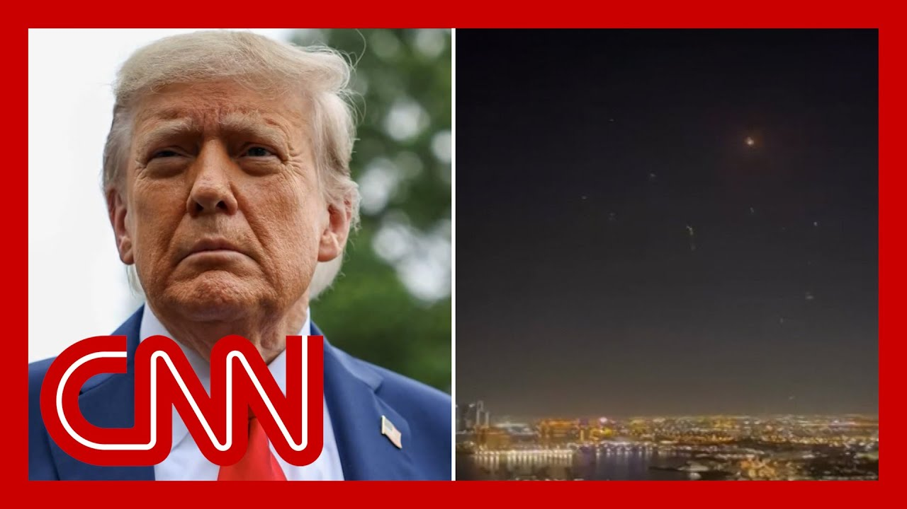

【特朗普感谢伊朗提前通知“软弱”的导弹袭击】
Summary: President Trump responded to Iran's retaliatory missile attack, calling it weak and thanking Iran for advance notice that prevented casualties, while expressing hope for regional peace and encouraging Israel to follow suit.
摘要： 特朗普总统回应伊朗的报复性导弹袭击，称其软弱，并感谢伊朗提前通知避免了伤亡，同时表达了对地区和平的希望，并鼓励以色列效仿。

⏱️ Estimated Reading Time: 18 min
📚 六级生词 📚 雅思生词 📚 托福生词 📚 专八生词 📚 SAT生词 📚 考研生词 📚 GRE生词 📚 高考生词
President Trump has just weighed in on Iran's attempt at retaliation for U.S. strikes on its nuclear facilities this past weekend.
特朗普总统刚刚对伊朗针对上周末美国对其核设施打击的报复企图发表了看法。
Trump, writing on Truth Social Quote, Iran has officially responded to our obliteration of their nuclear facilities with a very weak response.
特朗普在Truth Social上写道，伊朗对我们摧毁其核设施的回应非常软弱。
They've gotten it all out of their system and there will hopefully be no further hate.
他们已经发泄完毕，希望不会再有任何仇恨。
I want to thank Iran for giving us early notice, which made it possible for no lives to be lost and nobody to be injured.
我要感谢伊朗提前通知我们，这使得无人丧生或受伤成为可能。
Perhaps Iran can now proceed to peace and harmony in the region and I will enthusiastically encourage Israel to do the same.
也许伊朗现在可以推进地区的和平与和谐，我将热情鼓励以色列也这样做。
Now, here's a look at Iran's response that Trump is now referring to as weak.
现在，来看看特朗普所称的伊朗“软弱”的回应。
Iran earlier today launching short and medium-range ballistic missiles toward a heavily fortified U.S. base and cutter.
伊朗今天早些时候向一个高度设防的美国基地和卡塔尔发射了短程和中程弹道导弹。
U.S. officials say there are no reports of injuries or casualties among American troops or cutlery citizens.
美国官员表示，没有关于美军或卡塔尔公民受伤或死亡的报告。
Now, this could be in part because of what President Trump pointed out in his post.
这可能部分归因于特朗普总统在帖子中指出的内容。
Iran actually gave cutter advanced notice before the strikes.
伊朗实际上在袭击前向卡塔尔提前发出了通知。
A source tolcnm this was intended to minimize casualties and preserve an off-ramp for the conflict.
消息人士告诉CNN，此举旨在减少伤亡并为冲突保留退路。
While Iran's thwarted attack today may have been on the lighter end of their retaliatory options, a new bulletin from the Department of Homeland Security warns Iran could try to target U.S. government officials if Iranian leaders believe the quote, stability or survivability of their regime is at risk.
尽管伊朗今天的挫败袭击可能是其报复选项中较轻的一种，但国土安全部的新公告警告称，如果伊朗领导人认为其政权的“稳定或生存”受到威胁，他们可能会试图针对美国政府官员。
This all follows new Israel-extrax honor on today aimed at the notorious Evan prison in Tehran, known for housing political prisoners.
这一切都发生在以色列今天对德黑兰臭名昭著的埃文监狱发动的新袭击之后，该监狱以关押政治犯而闻名。
And Iran's military headquarter CNN has this covered from every single angle for a plakin in Iran, Aaron Bernett in the United Arab Emirates, Jeremy Diamond in Tel Aviv, Israel and Jeff Zellani at the White House in Washington, DC.
CNN从各个角度报道了伊朗的军事行动，包括在伊朗的弗雷德·普莱金、在阿联酋的阿伦·伯内特、在以色列特拉维夫的杰里米·戴蒙德以及在华盛顿特区白宫的杰夫·泽兰尼。
We want to start things off with CNN's for a plakin who is in Tehran, Iran.
我们首先连线在伊朗德黑兰的CNN记者弗雷德·普莱金。
Fred, what are you seeing on the ground there today?
弗雷德，你今天在当地看到了什么？
And what are you hearing from Iranian officials about what may come next?
你从伊朗官员那里听到了关于接下来可能发生的事情？
Hi there, Phil.
你好，菲尔。
Well, first of all, as far as this retaliation is concerned, a couple of hours ago, the Iranians came out with statements saying that they had in fact launched a barrage of missiles towards the AUD airbase run, of course, by the United States.
首先，就这次报复行动而言，几小时前，伊朗人发表声明称，他们实际上向由美国运营的AUD空军基地发射了一连串导弹。
In Qatar, they said, and this came from a statement from Iran Supreme National Security Council that the amount of missiles fired by- towards the senior facilities by the United States, obviously, indicating that this could very well have been a tit for tat response by the Iranians.
在卡塔尔，他们表示，这来自伊朗最高国家安全委员会的声明，称美国向高级设施发射的导弹数量显然表明，这很可能是伊朗的以牙还牙的回应。
The Iranians are calling this a decisive response, a robust response, and they also say that it was successful.
伊朗人称这是一次决定性的、强有力的回应，并表示这次行动是成功的。
The Iranian state media, Phil, is saying that six of the missiles came through and hit their targets, obviously impossible for us to independently verify that.
伊朗国家媒体称，有六枚导弹命中目标，当然我们无法独立核实这一点。
Mark, and there were actually celebrations in the streets here in Tehran, following that attack by the Iranians.
马克，德黑兰街头实际上在伊朗的这次袭击后出现了庆祝活动。
And as far as today is concerned, we did see a lot of anti-aircraft fire coming here over the skies of Tehran this evening.
就今天而言，我们确实看到今晚德黑兰上空出现了大量防空火力。
Also, of course, preceding that, where those Israeli air strikes that you were talking about, some of those air strikes actually very close to our location earlier today, we heard-
当然，在此之前，还有你提到的那些以色列空袭，其中一些空袭今天早些时候离我们的位置非常近，我们听到——
Fred Pleikin, one of the few Western journalists in Tehran having some issues there with his sound.
弗雷德·普莱金，德黑兰为数不多的西方记者之一，他的声音出现了一些问题。
We are going to keep in touch with him throughout the course of the show.
我们将在节目期间与他保持联系。
Fred, thank you.
弗雷德，谢谢。
Stay safe.
注意安全。
I want to turn now to CNN anchor, Aaron Bernett, who is also in the region.
现在我想转向同样在该地区的CNN主播阿伦·伯内特。
She's in the United Arab Emirates.
她在阿联酋。
Near the strait of promos, a key strategic waterway in the Middle East.
靠近霍尔木兹海峡，这是中东的一个关键战略水道。
Aaron, Iran's attack today is only putting this entire region more on edge, it seems.
阿伦，伊朗今天的袭击似乎让整个地区更加紧张。
Yeah, more on edge.
是的，更加紧张。
And of course, there's so much concern.
当然，有很多担忧。
I mean, if you look at between the air base here in the United Arab Emirates, and obviously the massive naval presence here by the U.S. Navy, as well as in Bahrain, where the fifth fleet is, and in Qatar, where you saw those strikes from Iran today, you have up to 30,000 troops just here in the Gulf, where we're talking about right now on high alert tonight, Phil, concern about what could happen.
我的意思是，如果你看看阿联酋这里的空军基地，以及美国海军在这里的大规模海军存在，还有巴林的第五舰队，以及今天伊朗发动袭击的卡塔尔，仅在波斯湾地区就有多达3万军队，今晚处于高度戒备状态，菲尔，人们担心可能发生的事情。
There had been a shelter-in-place order that had been issued by the U.S. Embassy in Qatar for American citizens when those missiles started coming in.
当导弹开始袭来时，美国驻卡塔尔大使馆向美国公民发出了就地避难令。
Short and long ranges, Fred was just describing from Iran.
弗雷德刚刚描述了伊朗发射的短程和远程导弹。
You saw a panic even at a mall and a region very much on edge.
你甚至在一个购物中心看到了恐慌，整个地区都非常紧张。
Also, concern that the threat to Americans, while most specific on U.S. bases and military installations here in the Gulf and across the Middle East, also extends to Americans, whether that be in the form of terror attacks or lone wolf attacks or some sort of bombing attacks.
此外，人们担心对美国的威胁，虽然主要集中在海湾和中东的美军基地和军事设施，但也可能延伸到美国人，无论是恐怖袭击、独狼袭击还是某种炸弹袭击。
Those are the real concerns and questions among American intelligence and also from sources saying what they are most worried about.
这些是美国情报机构和消息人士最担心的真正问题和担忧。
But the airspace here, just to give you a sense of how dynamic the situation is, Phil, briefly when those missiles were coming in, you know we had people coming in from London, all of a sudden you see airspace closed.
但这里的空域，只是为了让你了解局势的动态，菲尔，当导弹袭来时，我们有从伦敦来的人，突然空域关闭了。
People unable to get into the United Arab Emirates, temporary pauses, enclosures, and rerout airlines like Air France have changed their service and started to cut back service altogether to the UAE, just to give you a sense and to Saudi Arabia, to give you a sense of the region on edge and the stakes and how high they are behind me, Phil, the western tip of the Strait of Hormuz, that crucial shipping lane, a series of disputed islands with massive Iranian military presence behind us, and all of this pointing to, of course, the biggest tool, the biggest threat that Iran has at its disposal, which would be perhaps mining or closing this crucial waterway for a fifth of the world's oil every day.
人们无法进入阿联酋，航班暂停、改道，像法航这样的航空公司已经改变了服务并开始完全削减对阿联酋的服务，只是为了让你了解局势的紧张程度和风险有多高，菲尔，我身后是霍尔木兹海峡的西端，这个关键的航运通道，一系列有争议的岛屿，背后有伊朗的大规模军事存在，所有这些都指向伊朗掌握的最大工具和最大威胁，可能是布雷或关闭这条每天运输全球五分之一石油的关键水道。
But very much a region on edge and the question of whether that strike in Doha was the first, whether it was it, what might be next with U.S. military assets here on high alert, Phil.
但整个地区非常紧张，问题是多哈的袭击是否是第一次，是否是最后一次，美国军事资产高度戒备下接下来可能发生什么，菲尔。
Aaron, if you'll let me kind of want to flash back to our past lives as finance economics reporters based on what you were just talking about, and that is watching oil markets throughout the course of the day has been fascinating to me, because before I think the rest of the world started to exhale a little bit based on the initial, or at least only retaliatory strike we've seen up to this point, markets were responding with a broad sense of, all right, that's it, we're in a good spot now, we can move forward on some degree in terms of where oil prices were, is there a sense right now in the region that the Strait of Hormuz is not really on the table for Iranian retaliation?
阿伦，如果你允许的话，我想回顾一下我们作为财经记者的过去生活，根据你刚才所说的，今天观察石油市场对我来说非常有趣，因为我认为在世界其他地区因为最初的或至少是目前为止唯一的报复性袭击而稍微松一口气之前，市场的反应是一种广泛的感觉，好吧，就这样了，我们现在处于一个不错的位置，可以在某种程度上根据油价走势前进，现在该地区是否有感觉霍尔木兹海峡并不是伊朗报复的真正选项？
I think it depends on who you talk to, and obviously, Phil, you and I both know they have never in the history even amidst conflict closed it before.
我认为这取决于你和谁交谈，显然，菲尔，你我都知道他们在历史上甚至在冲突中从未关闭过它。
So there's that, and the market takes solace in that.
所以这一点让市场感到安慰。
However, you talk to some in the Iranian government when you do art, we are able to have conversations with them, and they will always put that out there as as something that they could do, which of course, as you could see, the oil markets at this point don't think that that's a real risk.
然而，当你与伊朗政府的一些人交谈时，我们能够与他们对话，他们总是会提出这是他们可以做的事情，当然，正如你所看到的，石油市场目前并不认为这是一个真正的风险。
It is interesting though, you look at the market always as a gauge of what the future holds.
不过有趣的是，你总是把市场看作未来走势的指标。
We are living in a world where actions do not always match what would be the rational explanation that makes the most sense, right, whether you see that on tariffs or what you see it on.
我们生活在一个行动并不总是与最合理的解释相符的世界，对吧，无论是在关税还是其他方面。
So yes, the market see this as not a real risk, they see escalation of conflict itself as not a real risk, but it's also fair to say that one week ago or 10 days ago, the markets would never have thought that we'd be sitting here having these conversations that we're having right now.
所以是的，市场认为这不是真正的风险，他们认为冲突升级本身也不是真正的风险，但公平地说，一周或十天前，市场绝不会想到我们会坐在这里进行这些对话。
That is such an important point, Aaron Bernat in the United Arab Emirates.
这是一个非常重要的观点，阿伦·伯内特在阿联酋。
Thank you, as always, and of course, Aaron will have much more from the region tonight on Arn Bernat out front right after the lead, seven o'clock Eastern here on Sin.
一如既往地感谢你，当然，阿伦今晚将在《前线》节目中带来更多来自该地区的报道，东部时间七点在CNN播出。
And I want to turn now to Israel and see it as Jeremy Diamond who is in Tel Aviv for us.
现在我想转向以色列，看看在特拉维夫的杰里米·戴蒙德。
Jeremy, what are you hearing from Israeli officials now that we've seen this response from Iran?
杰里米，现在我们已经看到伊朗的这次回应，你从以色列官员那里听到了什么？
Well, a fill as those ballistic missiles were headed towards that U.S. base in Qatar, Israeli officials here were certainly on high alert for the potential that Iran's retaliation might also extend to Israeli territory as well.
嗯，菲尔，当那些弹道导弹飞向卡塔尔的美军基地时，这里的以色列官员当然高度警惕伊朗的报复可能也会延伸到以色列领土。
They were prepared for a large barrage of ballistic missiles to be included in that retaliation, but ultimately it seems that for the moment at least it's been limited to that one base in Doha Qatar.
他们准备应对报复中可能包括的大量弹道导弹，但最终看来至少目前仅限于卡塔尔多哈的那个基地。
And now Israeli officials are turning to what the coming days may hold.
现在以色列官员正在关注未来几天可能发生的事情。
And in the same way that we are seeing across the region that the temperature is really starting to come down in the wake of what was clearly a carefully telegraphed and relatively limited attack by Iran.
就像我们在整个地区看到的那样，在伊朗这次显然是精心策划且相对有限的袭击之后，紧张局势确实开始降温。
Israeli officials are also telling me that they believe that they can achieve their military objectives in Iran within the coming days, and that that may then tee up the possibility for a ceasefire in this 10-day conflict.
以色列官员还告诉我，他们认为他们可以在未来几天内实现在伊朗的军事目标，这可能为这场持续10天的冲突带来停火的可能性。
Of course, that will require some diplomacy here, and we don't yet know whether that will flow through the Europeans, perhaps through this channel that Steve Whitkopf, this U.S. Special Envoy, has with Iran.
当然，这将需要一些外交努力，我们还不知道这是否会通过欧洲人进行，也许是通过美国特使史蒂夫·惠特科普夫与伊朗的这个渠道。
But certainly from the Israeli point of view, it certainly seems like they are headed in the direction of wrapping up their military operations in Iran in the coming days and showing a willingness to engage in diplomacy that would bring this conflict to an end, at least for now, Phil.
但从以色列的角度来看，他们似乎确实正在朝着在未来几天内结束在伊朗的军事行动的方向前进，并表现出愿意通过外交手段结束这场冲突的意愿，至少目前如此，菲尔。
Jeremy Diamond, for us in Tel Aviv, thanks so much.
杰里米·戴蒙德，在特拉维夫为我们报道，非常感谢。
Let's discuss now with retired U.S. Air Force General Philip, Breedlove, and National Security Expert Joseph Serencioni.
现在让我们与退役的美国空军将军菲利普·布里德洛夫和国家安全专家约瑟夫·塞伦西奥尼一起讨论。
General, to start with you, a source telling CNN, Iran gave a cut out of his head up about this attack on the U.S. base there.
将军，首先从你开始，消息人士告诉CNN，伊朗提前通知了这次对美国基地的袭击。
The source saying it was intended to minimize casualties, provided potential off-ramp.
消息人士称，此举旨在减少伤亡，提供潜在的退路。
At the same time, a senior Iranian official tells Reuters that Iran will continue its retaliation in response to U.S. attacks.
与此同时，一名伊朗高级官员告诉路透社，伊朗将继续报复美国的袭击。
Level set for people here.
为这里的人们梳理一下。
Where do we stand as this plays out?
随着事态发展，我们现在处于什么位置？
Well, thanks for having me on, and nobody really knows.
嗯，谢谢邀请我，实际上没有人真正知道。
But I think that what we have seen is Iran now is playing more to its internal audience than its external audience.
但我认为我们看到的是，伊朗现在更多地是在迎合国内观众而非国际观众。
The proportional sort of measure of what happened today, the fact that they warned ahead of time.
今天发生的事情的相称性，以及他们提前警告的事实。
I think they're looking to try to bring the temperature down, but they have sort of celebrated this with much more victory than actually happened to their internal audience.
我认为他们试图降低紧张局势，但他们在国内观众面前庆祝的胜利比实际发生的要多得多。
And I think that's their first concern right now.
我认为